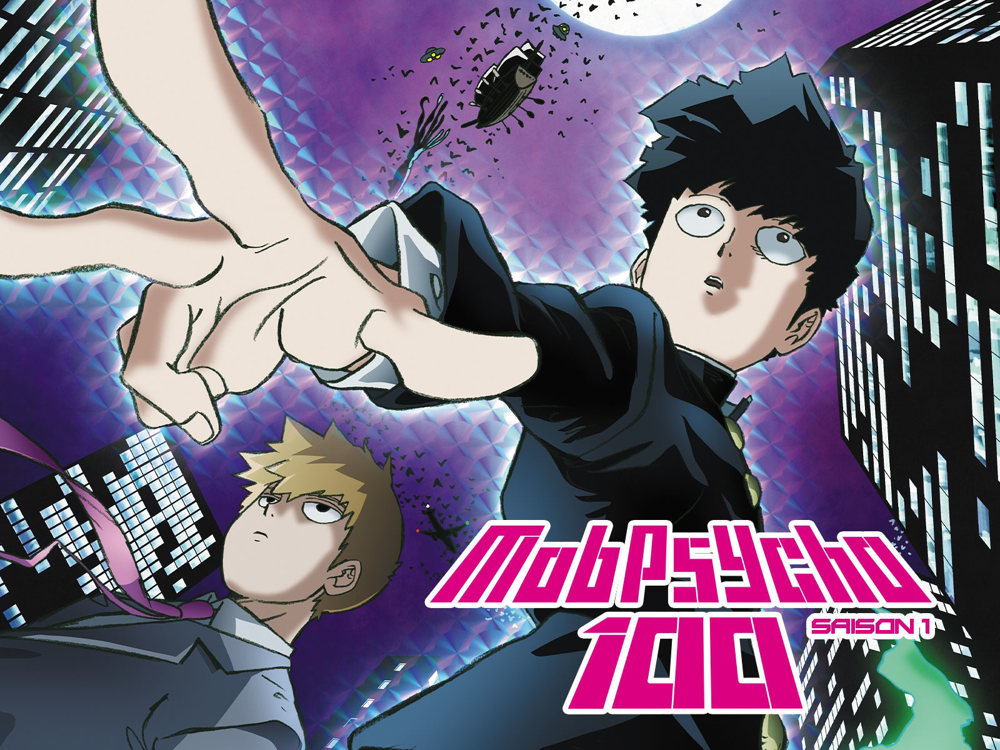

The best Comedy anime for new fans:
The main focus of comedy stories is to make the audience feel good and bring out positive emotions. They aim to make us laugh, be amused, and entertained. Comedy stories often have episodic structures or conclude with happy endings.
This category was a tricky one to put together. Reason being that there are not all that many anime that are purely about comedy. Instead, many anime just use it as a subgenre and give their overal story a more funny and lighthearted feeling. That is why I have picked two anime that do just that, and do it very well.
Number 1 - One Punch Man

Saitama has a rather peculiar hobby, being a superhero, but despite his heroic deeds and superhuman abilities, a shadow looms over his life. He's become much too powerful, to the point that every opponent ends up defeated with a single punch.
The lack of challenge has driven him into a state of apathy, as he watches his life pass by having lost all enthusiasm, at least until he's unwillingly thrust in the role of being a mentor to the young and revenge-driven Genos.
(Source: Anilist)
Honorable mention - Mob Psycho 100
A show by the same author as One Punch Man, The story of Mob Psycho 100 revolves around "Mob," a boy who will explode if his emotional capacity reaches 100%. This boy with psychic powers earned his nickname "Mob" because he does not stand out among other people. He keeps his psychic powers bottled up so he can live normally, but if his emotional level reaches 100, something will overwhelm his entire body.
(Source: Anime News Network, Anilist)